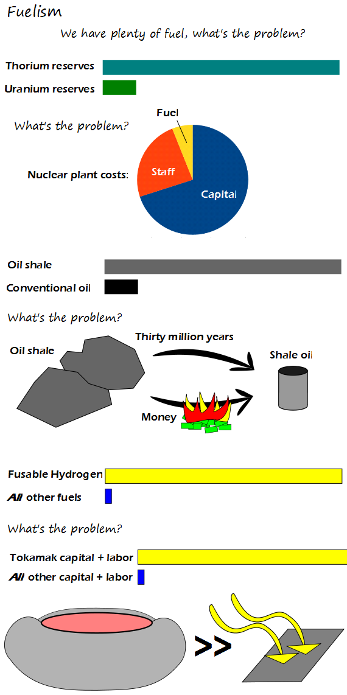

Comic JK 910
When I Feel Like It
⇤
<
?
>
⇥

⇤
<
?
>
⇥
Forum
.
RSS
.
Digg
.
Facebook
.
Reddit
.
Twitter
.
Stumbleupon
Keep ignoring this comic here. Don't worry, we know you don't understand it. Um...what are those pictures on the bottom supposed to be? >The left is a Tokamak Reactor (https://en.wikipedia.org/wiki/Tokamak) You're assuming tokamak is the only viable option for fusion. Look up laser fusion or dense plasma focus. Only 3 years until ITER is ready! Ready to start being assembled, that is. You mean _human labour_ is what truly gives value to stuff? Congrats - you've just redicovered XIX century economics! I doubt that Tokamaks/Stellarators would be so expensive, if built for a commercial power plant. ITER is a scientific tool and designed to perform a lot of experiments. In addition, a large part of its costs is related to research for ITER. Research has to be done once, distributed over possible 100+ fusion power plants the costs per plant are not so high. >You would expect the very first of anything to cost a lot. The first gas hob for frying bacon probably cost more than one of today's fission reactors. If we had fusion power tomorrow your anus would waste it all frying bacon. > In what way would that be a waste? Assuming she shares the bacon with everyone, that is. >> I never really thought about it this way. WE NEED FUSION POWER NOW! >>>My mother frying bacon with fusion power proves fusion is another pork project. >>>>>Miss Piggy finds this highly offensive. signed Kermit T. Frog